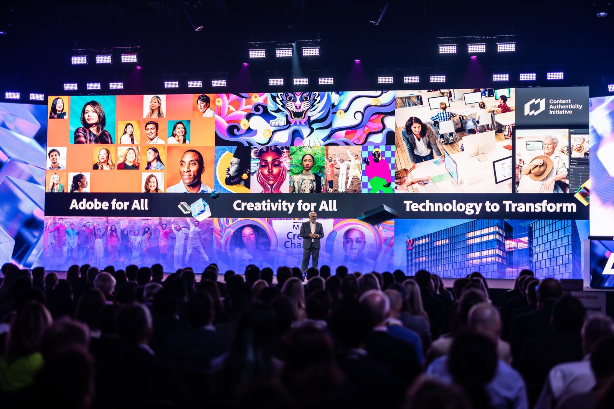
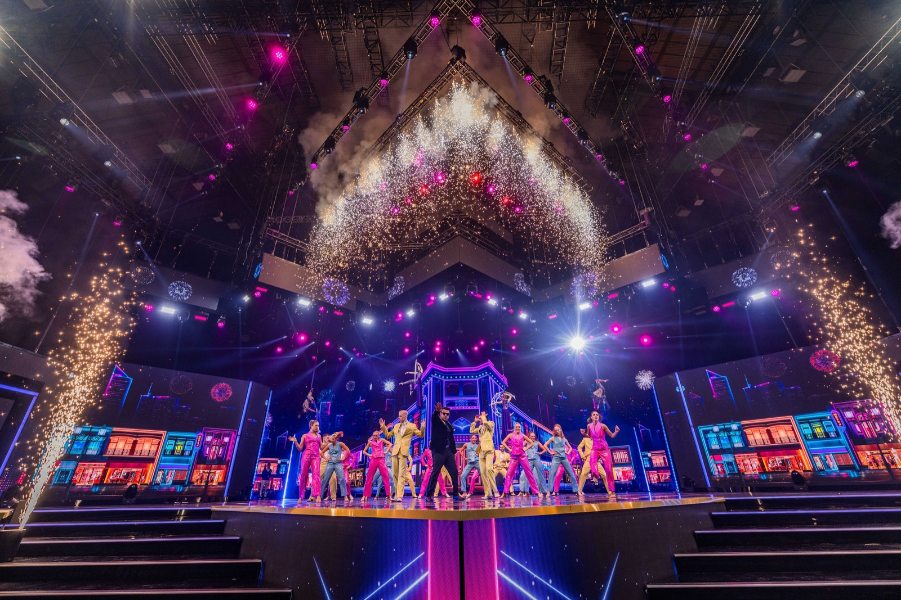
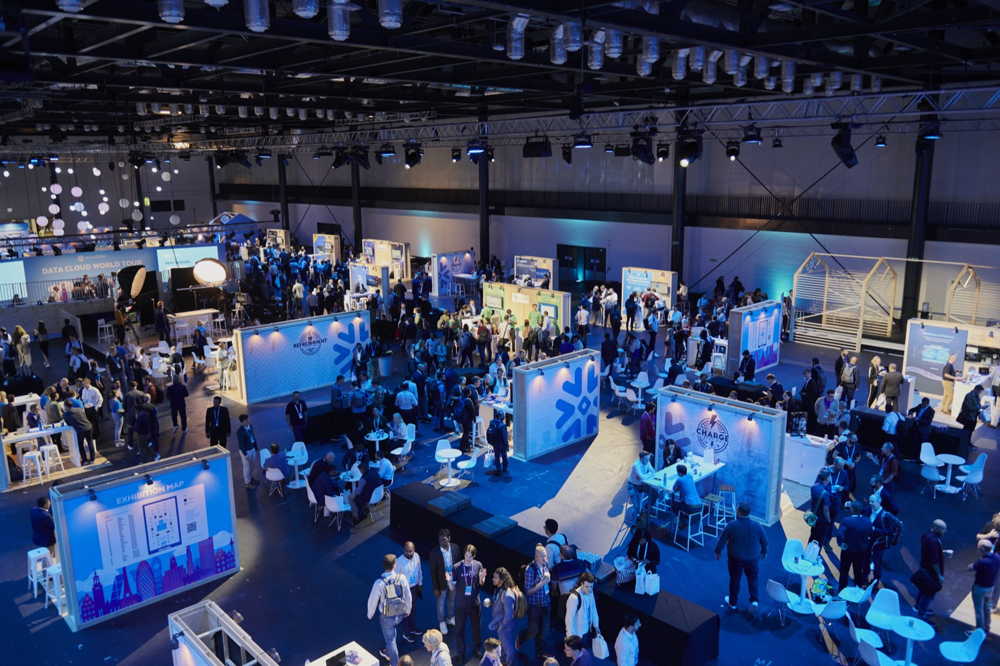

News & insights
Behind the experience.
Ideas, perspectives and a closer look at what goes into an unforgettable event.
Explore the storiesPerspectives on creativity, production and audience experience · Draft editorial copy.

Creative & Content
From a first idea to a shared experience
Every event begins with a question: what should people feel, understand or do differently when they leave?
Read the story
Technical Production
The planning behind a seamless show
A clear technical plan connects the creative ambition with everything needed to deliver it in the room.
Read the story
Experience Design
See the event through your audience’s eyes
The experience starts before the doors open. Looking at the whole journey helps each moment feel connected.
Read the story
Your next event
Let’s put your ideas
Start your event